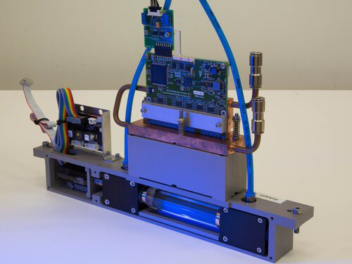
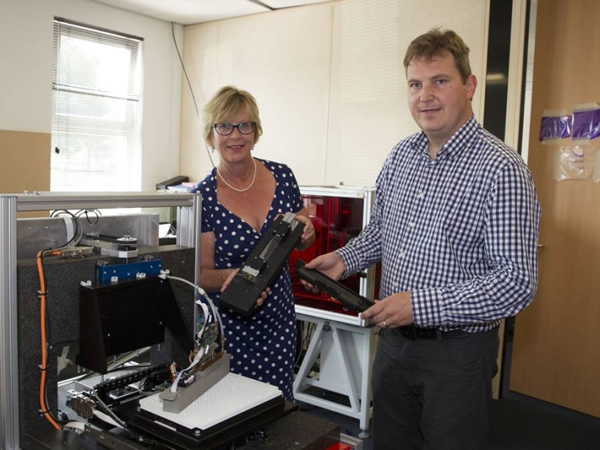

History
The project started in 2013 when TNO researches alternative approaches for printed circuit board lithography. TNO is the most prominent government research institute in the Netherlands. The Netherlands is interested in lithography due to the regional importance of ASML. Once a laser is focussed on a small spot it must be moved fast to expose a plane. The laser can be moved by mirrors or prisms. Rotating prisms have a lower cross-scan error and enable simpler optics than rotating mirrors which require a f-theta lens. The disadvantages of alternative exposure technologies are outlined by me on Reprap. Around 2013, Erwin van Zwet suggests using a prism to move a laser bundle with a sweeping motion, similar to a galvo mirror. Dr. Jacobus Jamar improves to the idea by outlining the benefits of rotating the prism and using multiple lasers. This first system moves multiple laser bundles with a thicker prism under an angle, see US10114289B2. The engine is shown below. This version is inspired by Kleo LDI developed by Carl Zeiss and now owned by Manz.

The patent is split into two application areas; printed circuit board manufacturing and 3D printing. With the support of TNO, Peter Brier and Wilma Koolen found LDI Systems for printed circuit board manufacturing and fail.

LDI Systems gets acquired by Innovation Industries. Rik Starmans starts working at TNO around 2014. It is very challening to build the system with multiple lasers and get these aligned. As a result, Rik suggests a single laser bundle per prism variant. This is easier and does not fall under the patent. Due to differences, Rik leaves TNO in 2017. Development of laser prism scanning is thus split over two groups; Hexastorm and AMSystems.
Hexastorm
Rik Starmans starts a Kickstarter campaign and publishes a white paper as an anti-patent shield. The campaign fails. Hexastorm receives help from Felixprinters which provides office space and a frame to place the laser scanner on. I have a prototype but can’t fix the electronics and start working at Verint. The collaboration with Felixprinters ends. After a year and via Verint, I meet an electronics engineer from Italy (Maurizio Spoto) and he builds the first electronic design for 400 USD. I start a blog on Hackaday. Using the code of Henner Zeller, I succeed in getting a working prototype with a Beaglebone. I get it working in the lab of the NTS-group. Recognition increases, and I win 3000 USD in the Hackaday Prize 2019 using the system. I change the electronics from microcontrollers, the Beaglebone, to FPGA in July 2021. The code is based upon Amaranth HDL and uses some components from luna. I create a printed circuit board in 2022. In 2023, I show a laser scanner which uses a printed circuit board motor to move the prism.
AMSystems
At TNO, the laser scanner with multiple lasers is used but development is put on hold. Around 2019, TNO decides to create a new company, AMSystems which uses the technology for 3D printing. Money is raised via NWO, a state fund via a loan of 250K euro’s in 2021. In 2022, AM Systems receives a subsidy of 50K for the development of a recoater. In 2023 AMsystems receives a 150K loan from Rabobank. So far, AMSystems has not shown it solved the problems I faced while working with the system.